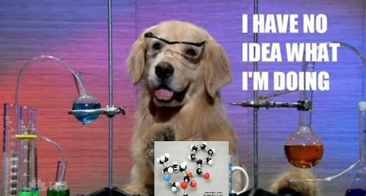
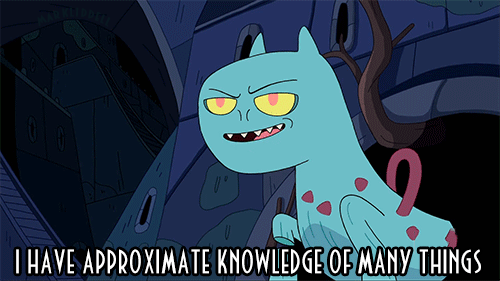

Week 4
Enumerable#group_by
July 12 2015
Coming into Dev Bootcamp, I felt just like Chemistry Dog:
Now I'm feeling a little more confident, but still feel like I am groping in the dark.
Speaking of approximate knowledge, our assignment this week is to post on something we are going to learn this upcoming week, so I chose the Ruby Enumerable method #group_by. Please don't ask me why, it was pretty much random.
This method, group_by, as elucidated by that bastion of clarity Ruby-Docs, is a way to "group", (you just gotta love Ruby method names,) and it works on any collection, be it arrays or hashes, or strings or integers, what-have-you. It spits them out as a hash, "grouping" several of the keys and values as you see fit.
The textbook definition is as follows:
Groups the collection by result of the block. Returns a hash where the keys are the evaluated result from the block and the values are arrays of elements in the collection that correspond to the key. If no block is given an enumerator is returned.
So there you have it! Clear as day. What? You want me to actually explain what it does? OK... But don't say I didn't warn you...
From what I gather, (And I gather what I can,) this method is a bang up way of simply grouping your stuff into an alternate hash, wish is another collection object.
The example used is:
(1..6).group_by { |i| i%3 } #=> {0=>[3, 6], 1=>[1, 4], 2=>[2, 5]}
That's really all there is to it: You have a collection of things, and you can use it if you wish to change up the way it is grouped together. Pretty simple concept really, but as most things in Ruby, it is deceptively so and is likely hard to master, young grassh.. ahem ... Cicada.
Cheers y'all!